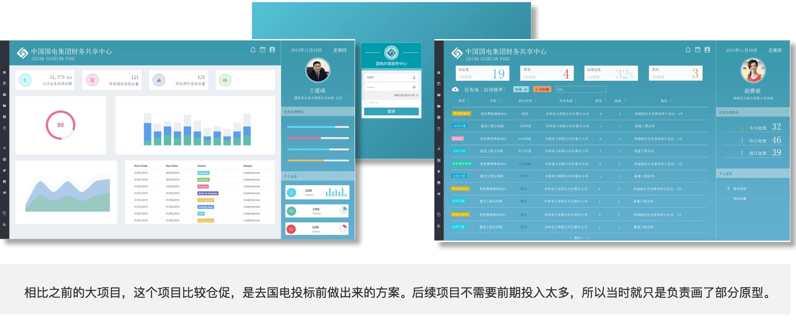
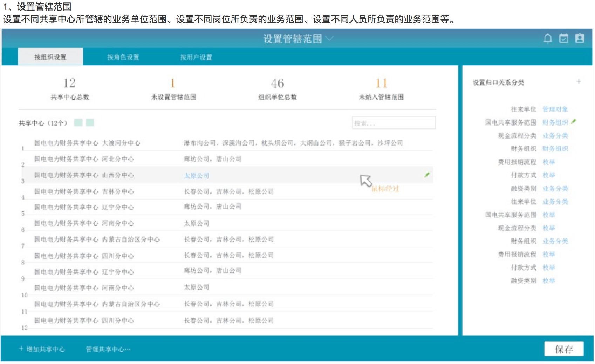
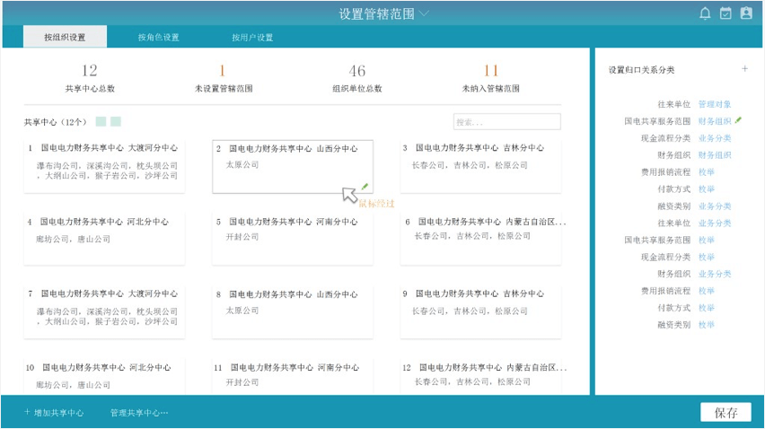
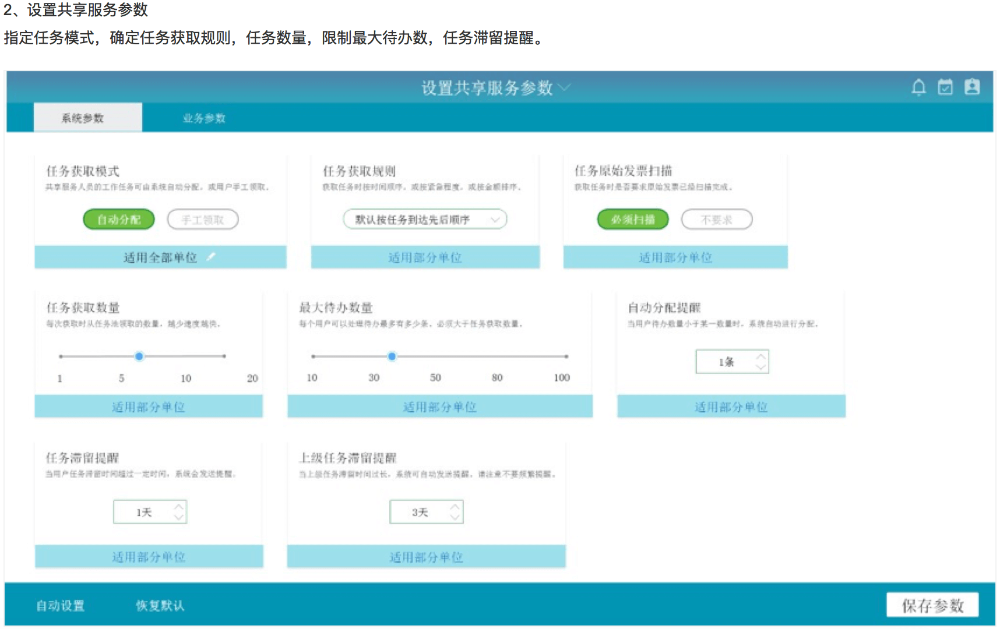
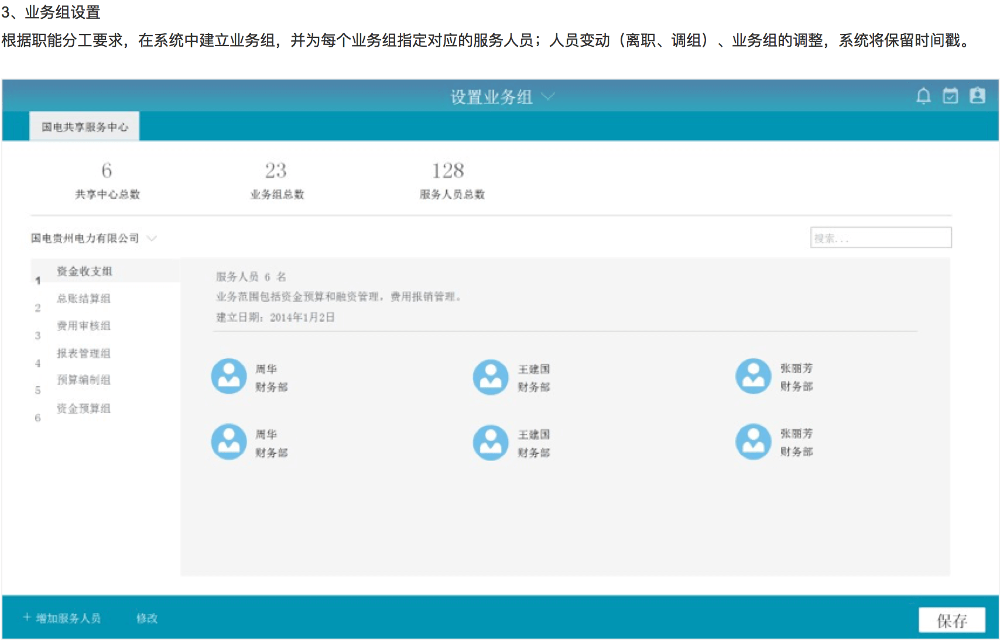
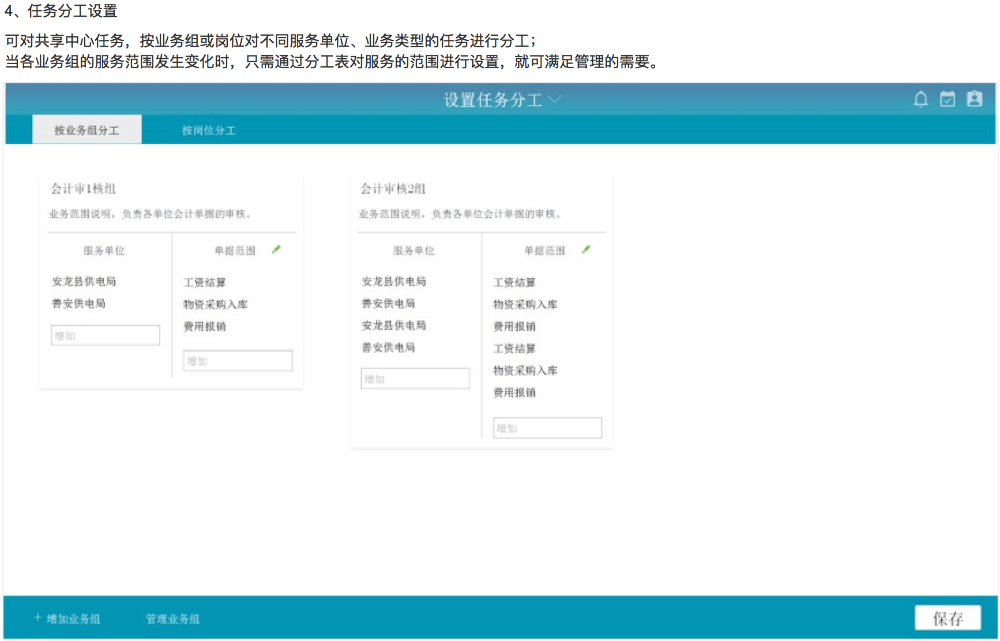
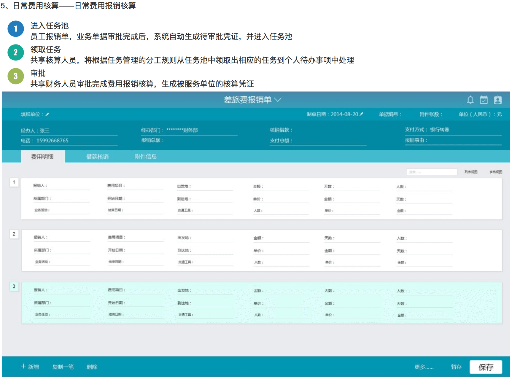
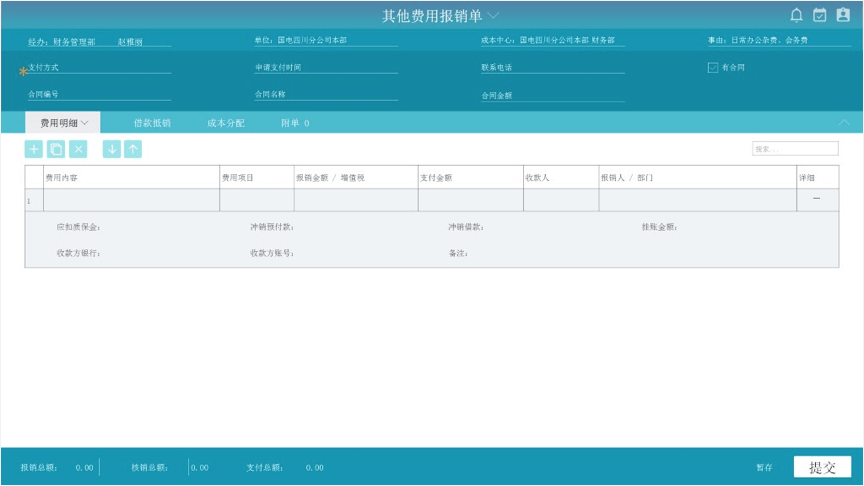
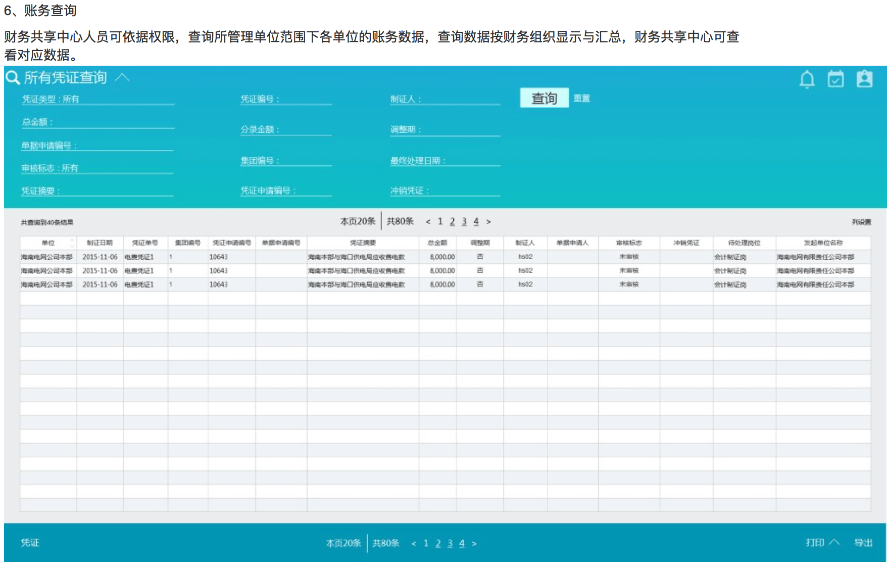

项目背景
财务共享服务中心（将企业内部重复性高、易于标准化的业务进行流程再造、制定标准化，集中到一个业务单元进行处理）作为一种新的财务管理模式，正在许多跨国公司和国内大型集团公司中兴起与推广。企业互联网时代，要实现企业财务定位从简单记账到决策支持的转型，借助财务共享服务是必不可少的。通过批量处理的规模效应来提升效率；通过提高财务部门业务专注度，从而优化资源、提升财务部门对业务的支持能力。此背景下，中国国电集团公司为集团公司可持续发展提供有力保障，贯彻集团公司“一五五”核心战略，提出了建立财务共享服务中心的计划。
        这个项目相对简单，参与过程是根据已搭建好的业务框架，绘制界面原型。由于属于早期项目，UI3.0处于雏形阶段，所以设计上大胆地做了很多新的尝试，过程中也学习了不少新的知识。对于这种在原有业务上重新构建的项目，在设计时需要注意的就是不能思维固化，而是能根据最新要素，突破固有模式，找到新的模式。
另外，财务共享服务这块还是具有很大潜能的。除了PC端，是可同时满足多终端接入的。在移动审批中，审批人能交互的信息是非常丰富的。而从技术层面看，人员的云共享其实一种特殊形态的云计算。财务共享服务中心自身可以理解为服务端，为大量客户端提供云端服务。当这种服务从企业步入社会化，掌握了优质信息系统和线上线下网络资源的企业将从云服务中获益，并获取大量的服务外包收益。
而在用户体验方面，我觉得是可以从服务设计角度切入，对于共享中心的各个环节再进行分析梳理，提供一套基于服务设计和用户角色的财务共享服务中心方案。